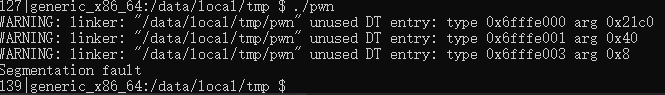
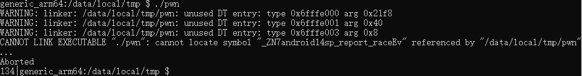
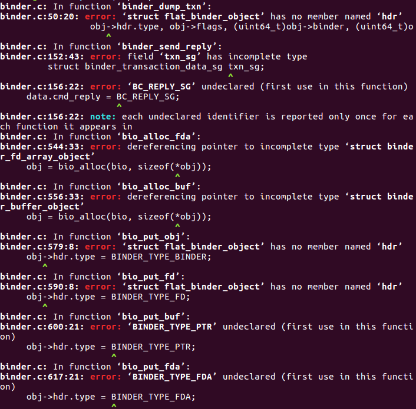

郑重声明：本文展示的过程是在模拟环境中进行的，只为学习研究之用，如有人用于非法用途，产生的后果笔者不负任何责任。
上篇文章沿着看雪论坛大神分享的思路（https://bbs.pediy.com/thread-254812.htm）分析了Android Binder的use_after_free漏洞，这篇文章记录下复现漏洞时踩过的坑。
首先，在https://github.com/jltxgcy/CVE_2019_2025_EXP下载源码。
可以看到工程需要在aosp环境下编译，然后，再将编译得到的可执行文件pwn放入设备中执行。
由于Android源码的编译需要在Linux环境下执行，而我的环境是win10，解决的方法有三个：
1、使用docker
2、Linux虚拟机
3、再装一个Linux系统（win10和Linux双系统，可以想象有无数个坑，果断放弃这一种）
一、使用Docker配置AOSP
首先，下载Docker for Windows并进行安装。安装完成后，启动Docker，会弹出错误提示，要求启动Hyper-V。（但是启动Hyper-V后，VMware虚拟机就打不开了。。。）
启动Hyper-V步骤：
- 打开控制面板，点击“程序”选项，然后选择“启动或关闭Windows功能”；
- 在Windows功能窗口中，找到Hyper-V，在前面打勾，点击确定；
- 更改完成后，根据提示，重启系统
启动docker，右击任务栏右下角的docker图标，点击Ketimatic，启动桌面。然后，在搜索栏输入aosp，点击create下载。
离线下载Android源码，然后配置 aosp路径。需要先在docker的Settings中设置Shared Drivers，否则docker不能访问主机的文件。具体设置、碰到的问题和解决方法参考：https://newsn.net/say/docker-share-folder.html
（设置后，依然不能从docker打开的powershell中访问程序的文件）
二、使用Linux虚拟机
这里使用的VMware，安装了Ubuntu16.04。
1、下载aosp镜像
官方教程地址为：https://source.android.com/setup/build/downloading。由于不能访问google官方AOSP，我们使用清华源下载。
首先，下载repo工具。
1 |
|
- wget -c https://mirrors.tuna.tsinghua.edu.cn/aosp-monthly/aosp-latest.tar # 下载初始化包
- tar xf aosp-latest.tar
- cd AOSP # 解压得到的 AOSP 工程目录# 这时 ls 的话什么也看不到，因为只有一个隐藏的 .repo 目录
- repo sync # 正常同步一遍即可得到完整目录# 或 repo sync -l 仅checkout代码The program ‘XX’ is currently not installed.
1
2
3
4
5
6
7
8
9
10
11
12
13
14
15
16
下载的aosp-latest.tar包将近60G的数据，且不能断点续传，建议选择网络稳定且网速较快的低峰时间下载。下载完成之后，解压缩，发现得到一个空的aosp目录，因为里面只有一个隐藏的.repo目录。需要同步一下才能得到完整的目录。同步的过程同样要很长的时间，耐心等待一下。。。

### 2、编译pwn工程
编译过程对性能要求比较高，虚拟机内存最好分配允许的最大内存。一开始只有8G内存，给虚拟机分配了6个G，每执行一个命令就要等半天才有反馈。后来扩展了8G，虚拟机内存分到了13.4G，速度肉眼可见的飞跃。
当然了，这里我们只编译单个模块，而不是整个系统。内存只有6G的时候，尝试编译了一次整个系统，果不其然，out of memory了。
下面是编译的具体过程：
**1.** 进入aosp目录下, 将下载的CVE_2019_2015_EXP.zip解压至本目录；
**2.** 初始化环境，执行：`source build/envsetup.sh `。否则后续命令执行会报错：
3. 执行lunch，选择编译的平台。lunch命令执行后如左图， 在https://source.android.google.cn/setup/build/running查看代号对应的设备如右图：


4. 切换到CVE_2019_2025_EXP目录，执行mm 。或者在aosp目录下，直接执行mm pwn (pwn是模块名字)。
m、mm、mmm命令可以只编译单独模块，而不用编译整个Android系统。
经过短则几分钟，长则半小时（不同性能）的编译后，果不其然，编译失败了。。。。
不过没关系，失败是常态，第一次就成功的，才是偶然。
报错内容：

是一个整型溢出错误，考虑到这是复现漏洞的源码，是经过复现漏洞的大神测试过的，那就只能是编译时的问题，而不是代码问题。经过一番周折（后续细说）才意识到，是lunch的时候选的编译平台有问题，默认的aosp_arm-eng是32位的，应该选64位的平台。重新执行lunch命令，选择aosp_arm64_eng，再次编译，终于成功了！
一番周折：
第一次编译结束，出现了整型溢出问题。而为了解决整型溢出问题导致的内存访问或内存分配关联变量中出现信息泄露，Android7.0中添加了有符号和无符号的整型溢出排错程序。于是，脑子一热，决定把源码切到Android6.0。
经过漫长的同步源码后，终于，又失败了。。。
这次的问题不再是整型溢出错误，而是/…/Android.mk：No such file or dir. 根据网上资料，尝试了几次，依次把报错的目录删掉，终于不报这个错了。 然而，万万没想到，又开始报整型溢出。。。
此时，才意识到可能是lunch的时候选的平台是32位的，而程序需要在64位的环境下编译。
于是，又把源码切回latest，重新选择64位的平台编译，这才成功。
5. 执行pwn，即连接设备，使用adb push将pwn文件放在设备/data/local/tmp目录下，再执行./pwn
然后，又报错了！
x86_64(Pixel 2):

arm64(Pixel 2):

3、编译exploitdb上的exp
地址：https://www.exploit-db.com/exploits/46503
exp下载地址：https://github.com/offensive-security/exploitdb-bin-sploits/raw/master/bin-sploits/46503.zip
注意：下载时不能挂代理，否则不能下载
根据描述，执行./complie.sh进行编译，结果又报错了。。。

打开compile.sh，发现里面是一句：gcc -o poc poc.c binder.c 。上图中报的错都是binder.c中的一些变量或结构体找不到。找来源码中的binder.c和binder.h与这里的对比，发现只有一部分相同，emmm小小的脑袋，大大的疑惑。。。。